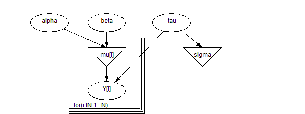
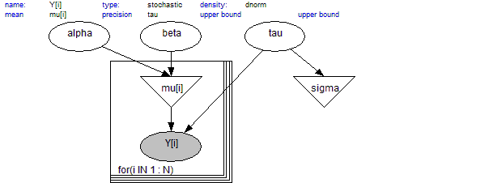
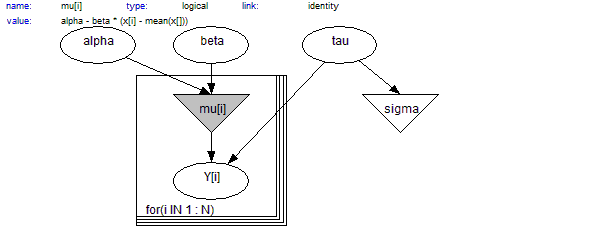

BUGS model specification language
Graphical models
We strongly recommend that the first step in any analysis should be the construction of a
directed graphical model. Briefly, this represents all quantities as nodes in a directed graph, in which arrows run to nodes from their direct influences (parents). The model represents the assumption that, given its parent nodes pa[
v], each node
v is independent of all other nodes in the graph except descendants of
v, where descendant has the obvious definition.
Nodes in the graph are of three types.
1.
Constants are fixed by the design of the study: they are always founder nodes (
i.e. do not have parents), and are denoted as rectangles in the graph.
2.
Stochastic nodes are variables that are given a distribution, and are denoted as ellipses in the graph; they may be parents or children (or both). Stochastic nodes may be observed in which case they are
data, or may be unobserved and hence be
parameters, which may be unknown quantities underlying a model, observations on an individual case that are unobserved say due to censoring, or simply missing data.
3.
Deterministic nodes are logical functions of other nodes.
Quantities are specified to be data by giving them values in a data declaration. Values for constants can also specified as data.
Directed links may be of two types: a thin solid arrow indicates a stochastic dependence while a thick hollow arrow indicates a logical function. An undirected dashed link may also be drawn to represent an upper or lower bound for a stochastic node.
Repeated parts of the graph can be represented using a 'plate', as shown below for the range
(i in 1:N).

A simple graphical model, where Y[i] depends on mu[i] and tau, with mu[i]
being a logical function of alpha and beta.
The conditional independence assumptions represented by the graph mean that the full joint distribution of all quantities
V has a simple factorisation in terms of the conditional distribution p(
v | parents[
v]) of each node given its parents, so that
p(V) =
Π p(v | parents[va]) v in V
The crucial idea is that we need only provide the parent-child distributions in order to fully specify the model, and
BUGS then sorts out the necessary sampling methods directly from the expressed graphical structure.
A special drawing tool
DoodleBUGS has been developed for specifying graphical models, which uses a hyper-diagram approach to add extra information to the graph to give a complete model specification. Each stochastic and logical node in the graph must be given a name using the conventions explained in
Creating a node.
.
The shaded node
Y[i] is normally distributed with mean
mu[i] and precision
tau.
 The shaded node
mu[i] is a logical function of
alpha,
beta, and the constants
x. (
x is not required to be shown in the graph).
The value function of a logical node contains all the necessary information to define the logical node.
As an alternative to the Doodle representation, the model can be specified using the text-based
BUGS language, headed by the model statement:
model {
text-based description of graph in BUGS language
}The BUGS language: stochastic nodes
In the text-based model description, stochastic nodes are represented by the node name followed by a tilda symbol followed by the distribution name followed by a comma-separated list of parents enclosed in brackets,
e.g.
x ~ dnorm(mu, tau) The distributions that can be used in
BUGS are described in
Distributions. The parameters of a distribution must be explicit nodes in the graph (scalar parameters can also be numerical constants) and so may not be expressions.
Multivariate nodes must form contiguous elements in an array. Since the final element in an array changes fastest, such nodes must be defined as the final part of any array. For example, to define a set containing
I multivariate normal variables of dimensional
K as a single multidimensional array
x[i, j], we could write:
for (i in 1:I) {
x[i,1:K] ~ dmnorm(mu[], tau[,])
}Data defined by a multivariate distribution must not contain missing (unobserved) values. The only exception to this rule is the multivariate normal distribution. We realise this is an unfortunate restriction and we hope to relax it in the future. For multinomial data, it may be possible to get round this problem by re-expressing the multivariate likelihood as a sequence of conditional univariate binomial distributions or as Poisson distributions.
Censoring is denoted using the notation
C(lower, upper) e.g.x ~ dnorm(mu, tau)C(lower, upper)would denote a quantity
x from the normal distribution with parameters
mu,
tau, which had been observed to lie between
lower and
upper. Leaving either lower or upper blank corresponds to no limit, e.g.
C(lower,) corresponds to an observation known to lie above lower. Whenever censoring is specified the censored node contributes a term to the full conditional distribution of its parents. This structure is only of use if
x has not been observed (if
x is observed then the constraints will be ignored). In general multivariate nodes can not be censored, the multivariate normal distribution is exempted from this restriction.
Truncation is denoted by using the notation
T(lower, upper) e.g.x ~ dnorm(mu, tau)T(lower, upper)would denote a quantity
x from the modified normal distribution normalized by dividing by the integral of the distribution between limits
lower and
upper, which lies between lower and upper. Leaving either
lower or
upper blank corresponds to no limit, e.g.
T(lower,) corresponds to an observation known to lie above lower.
x can either be observed or unobserved.
It is also important to note that if
x,
mu,
tau ,
lower and
upper are all unobserved, then
lower and
upper must not be functions of
mu and
tau.
Nodes with a discrete distribution must in general have integer values. Observed variables having a binomial or Poisson distribution are exempt from this restriction.
Certain parameters of distributions must be constants, that is they can not be learnt. These include both parameters of the Wishart distributions, the order (N) of the multinomial distribution and the threshold (mu) of the generalized Pareto distribution.
The precision matrices for multivariate normals must be positive definite. If a Wishart prior is not used for the precision matrix, then the elements of the precision matrix are updated univariately without any check of positive-definiteness. This will result in a crash unless the precision matrix is parameterised appropriately.
This is the user's responsibility! Forming the precision matrix from the product of cholesky factors will ensure positive definiteness.
The BUGS language: logical nodes
Logical nodes are represented by the node name followed by a left pointing arrow followed by a logical
expression of its parent nodes e.g.
mu[i] <- beta0 + beta1 * z1[i] + beta2 * z2[i] + b[i] Logical expressions can be built using the following operators: plus (
A + B), multiplication (
A * B), minus (
A - B), division (
A / B) and unitary minus (
-A). The scalar valued functions in
Functions and Functionals can also be used in logical expressions. A vector-valued logical function can only be used as the sole term on the right hand side of a vector-valued logical relation.
A link function can also be specified acting on the left hand side of a logical node
e.g. logit(mu[i]) <- beta0 + beta1 * z1[i] + beta2 * z2[i] + b[i]The following functions can be used on the left hand side of logical nodes as link functions:
log,
logit,
cloglog, and
probit (where
probit(x) <- y is equivalent to
x <- phi(y)).
A special logical node called "deviance" is created automatically by
BUGS: It calculates -2 * log(likelihood), where 'likelihood' is the conditional probability of all data nodes given their stochastic parent nodes. This node can be monitored, and is used in the DIC tool - see
DIC...Arrays and indexing
Arrays are indexed by terms within square brackets. The four basic operators
+,
-,
*, and
/ along with appropriate bracketing are allowed to calculate an integer function as an index, for example:
Y[(i + j) * k, l]On the left-hand-side of a relation, an expression that always evaluates to a fixed value is allowed for an index, whether it is a constant or a function of data. On the right-hand-side the index can be a fixed value or a named node, which allows a straightforward formulation for mixture models in which the appropriate element of an array is 'picked' according to a random quantity (see
Nested indexing and mixtures). However, functions of unobserved nodes are not permitted to appear directly as an index term (intermediate deterministic nodes may be introduced if such functions are required).
The conventions broadly follow those of S-Plus:
n : m represents
n,
n + 1, ...,
m.
x[ ] represents all values of a vector
x.
y[, 3] indicates all values of the third column of a two-dimensional array
y.
Multidimensional arrays are handled as one-dimensional arrays with a constructed index. Thus functions defined on arrays must be over equally spaced nodes within an array: for example
sum(y[i, 1:4, k]).
When dealing with unbalanced or hierarchical data a number of different approaches are possible - see
Handling unbalanced datasets. The ideas discussed in
Nested indexing and mixtures may also be helpful in this respect.
Repeated structures
Repeated structures are specified using a "for - loop". The syntax for this is:
for (i in a : b) { list of statements to be repeated for increasing values of loop-variable i
} Note that neither
a nor
b may be stochastic - see
here for a possible way to get round this.
Although transformations of data can always be carried out before using
BUGS, it is convenient to be able to try various transformations of dependent variables within a model description. For example, we may wish to try both
y and
sqrt(y) as dependent variables without creating a separate variable
z = sqrt(y) in the data file.
The BUGS language therefore permits the following type of structure to occur:
for (i in 1:N) {
z[i] <- sqrt(y[i])
z[i] ~ dnorm(mu, tau)
}Strictly speaking, this goes against the declarative structure of the model specification, with the accompanying exhortation to construct a directed graph and then to make sure that each node appears once and only once on the left-hand side of a statement. However, a check has been built in so that, when finding a logical node which also features as a stochastic node (such as z above), a stochastic node is created with the calculated values as fixed data.
We emphasise that this construction is only possible when transforming observed data (not a function of data and parameters) with no missing values.
This construction is particularly useful in Cox modelling and other circumstances where fairly complex functions of data need to be used. It is preferable for clarity to place the transformation statements in a section at the beginning of the model specification, so that the essential model description can be examined separately. See the
Leuk and
Endo examples.
Nested indexing and mixtures
Nested indexing can be very effective. For example, suppose
N individuals can each be in one of
I groups, and
g[1:N]is a vector which contains the group membership. Then "group" coefficients
beta[i] can be fitted using
beta[g[j]] in a regression equation.
In the
BUGS language, nested indexing can be used for the parameters of distributions: for example, the
Eyes example concerns a normal mixture in which the
i th case is in an unknown group
Ti which determines the mean
lTi of the measurement
yi. Hence the model is
Ti ~ Categorical(
P)
yi ~ Normal(
λTi ,
τ )
which may be written in the BUGS language
for (i in 1:N) {
T[i] ~ dcat(P[])
y[i] ~ dnorm(lambda[T[i]], tau)
}The mixture construct can also be applied to vector value parameters e.g.
for (i in 1:ns) {
nbiops[i] <- sum(biopsies[i, ])
true[i] ~ dcat(p[])
biopsies[i, 1:4] ~ dmulti(error[true[i], ], nbiops[i])
}Multiple (up to four) variable indices are allowed in setting up mixture models. e.g.
dyspnoea ~ dcat(p.dyspnoea[either, bronchitis, 1:2])
either <- max(tuberculosis, lung.cancer)
bronchitis ~ dcat(p.bronchitis[smoking, 1:2])
Data can be in an R/S-Plus format (used by R and S-Plus and most of the examples in BUGS) or, for data in arrays, in rectangular format.
Missing values are represented as
NA.
Non-integer numbers can be specified as floating point numbers in scientific notation, with the "times ten raised to the power of" denoted by either "
E" or "
e" (since MultiBUGS 2.0). For example, 0.02 could be represented
2E-2 or
2e-2.
The whole array must be specified in the file - it is not possible just to specify selected components. Any parts of the array you do not want to specify must be filled with
NAs.
All variables in a data file must be defined in a model, even if just left unattached to the rest of the model.
R/S-Plus format: This allows scalars and arrays to be named and given values in a single structure headed by key-word list. There must be no space after list.
For example, in the Rats example, we need to specify a scalar
xbar, dimensions
N and
T, a vector
x and a two-dimensional array
Y with 30 rows and 5 columns. This is achieved using the following format:
list(
xbar=22, N=30, T=5,
x=c(8.0, 15.0, 22.0, 29.0, 36.0),
Y=structure(
.Data=c(
151, 199, 246, 283, 320,
145, 199, 249, 293, 354,
...
...
137, 180, 219, 258, 291,
153, 200, 244, 286, 324),
.Dim=c(30,5)
)
)
BUGS reads data into an array by filling the right-most index first, whereas the R/S-Plus program fills the left-most index first. Hence
BUGS reads the string of numbers
c(1, 2, 3, 4, 5, 6, 7, 8, 9, 10) into a 2 * 5 dimensional matrix in the order
[i, j]th element of matrix value
[1, 1] 1
[1, 2] 2
[1, 3] 3
... ...
[1, 5] 5
[2, 1] 6
... ...
[2, 5] 10whereas R/S-Plus read the same string of numbers in the o
[i, j]th element of matrix value
[1, 1] 1
[2, 1] 2
[1, 2] 3
... ...
[1, 3] 5
[2, 3] 6
... ...
[2, 5] 10Hence the ordering of the array dimensions must be reversed before using the R/S-Plus
dput function to create a data file for input into
BUGS.
For example, consider the 2 * 5 dimensional matrix
1 2 3 4 5
6 7 8 9 10
This must be stored in R/S-Plus as a 5 * 2 dimensional matrix
> M
[,1] [,2]
[1,] 1 6
[2,] 2 7
[3,] 3 8
[4,] 4 9
[5,] 5 10The R/S-Plus command
> dput(list(M=M), file="matrix.dat")will then produce the following data file
list(M=structure(.Data=c(1, 2, 3, 4, 5, 6, 7, 8, 9, 10),
.Dim=c(5,2))Edit the
.Dim statement in this file from
.Dim=c(5,2) to
.Dim=c(2,5). The file is now in the correct format to input the required 2 * 5 dimensional matrix into
BUGS.
Now consider a 3 * 2 * 4 dimensional array
1 2 3 4
5 6 7 8
9 10 11 12
13 14 15 16
17 18 19 20
21 22 23 24This must be stored in R/S-Plus as the 4 * 2 * 3 dimensional array:
> A
, , 1
[,1] [,2]
[1,] 1 5
[2,] 2 6
[3,] 3 7
[4,] 4 8
, , 2
[,1] [,2]
[1,] 9 13
[2,] 10 14
[3,] 11 15
[4,] 12 16
, , 3
[,1] [,2]
[1,] 17 21
[2,] 18 22
[3,] 19 23
[4,] 20 24The command
> dput(list(A=A), file="array.dat")will then produce the following data file
list(A=structure(.Data=c( 1, 2, 3, 4, 5, 6, 7, 8,
9, 10, 11, 12, 13, 14, 15, 16,
17, 18, 19, 20, 21, 22, 23, 24),
.Dim=c(4,2,3))Edit the
.Dim statement in this file from
.Dim=c(4,2,3) to
.Dim=c(3,2,4). The file is now in the correct format to input the required 3 * 2 * 4 dimensional array into
BUGS in the order
[i, j, k]th element of matrix value
[1, 1, 1] 1
[1, 1, 2] 2
... ...
[1, 1, 4] 4
[1, 2, 1] 5
[1, 2, 2] 6
... ...
[2, 1, 3] 11
[2, 1, 4] 12
[2, 2, 1] 13
[2, 2, 2] 14
...
[3, 2, 3] 23
[3, 2, 4] 24Rectangular format: The columns for data in rectangular format need to be headed by the array name. The arrays need to be of equal size, and the array names must have explicit brackets: for example:
age[] sex[]
26 0
52 1
...
34 0
ENDNote that the file must end with an 'END' keyword, as shown above and below, and this must be followed by at least one blank line.Multi-dimensional arrays can be specified by explicit indexing: for example, the
Ratsy file begins
Y[,1] Y[,2] Y[,3] Y[,4] Y[,5]
151 199 246 283 320
145 199 249 293 354
147 214 263 312 328
...
153 200 244 286 324
ENDThe first index position for any array must always be empty.
It is possible to load a mixture of rectangular and R/S-Plus format data files for the same model. For example, if data arrays are provided in a rectangular file, constants can be defined in a separate list statement (see also the
Rats example with data files
Ratsx and
Ratsy).
(See
here for details of how to handle unbalanced data.)
Note that programs exist for conversion of data from other packages: please see the BUGS resources at http://www.openbugs.info